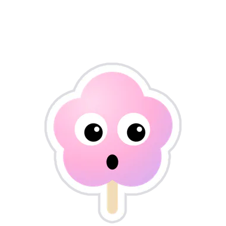
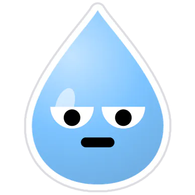
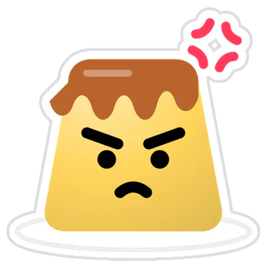
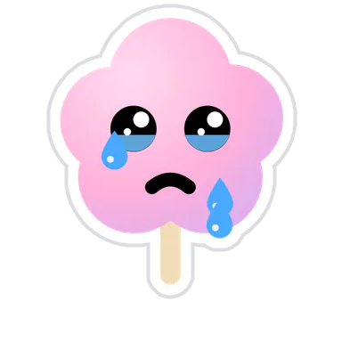

<!doctype html><meta charset="utf-8"><title>Pals stickers</title>
<style>body{margin:0;padding:24px;background:#ebe7f4;font:600 13px system-ui;display:grid;grid-template-columns:repeat(4,200px);gap:16px}
figure{margin:0;background:#fff;border-radius:24px;padding:12px;text-align:center}img{width:176px;height:176px}</style>
<figure><figcaption>Chào nha · chao</figcaption></figure>
<figure><figcaption>Vui quá · vui</figcaption></figure>
<figure><figcaption>Cười xỉu · cuoi</figcaption></figure>
<figure><figcaption>Nháy mắt · nhay</figcaption></figure>
<figure><figcaption>Lêu lêu · le</figcaption></figure>
<figure><figcaption>Yêu nhiều · yeu</figcaption></figure>
<figure><figcaption>Thơm cái · hon</figcaption></figure>
<figure><figcaption>Hả!? · ngac</figcaption></figure>
<figure><figcaption>Lười ghê · luoi</figcaption></figure>
<figure><figcaption>Buồn ngủ · ngu</figcaption></figure>
<figure><figcaption>Dỗi rồi · gian</figcaption></figure>
<figure><figcaption>Huhu · khoc</figcaption></figure>
